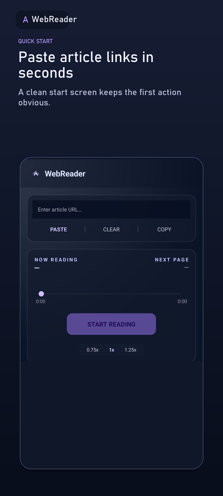
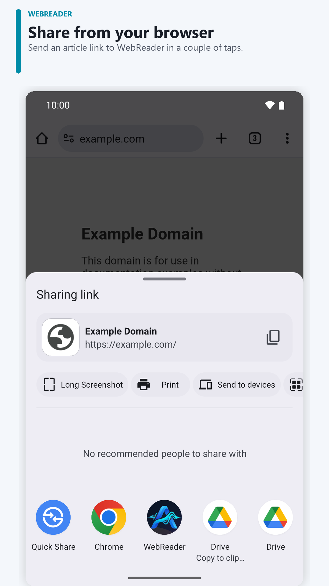
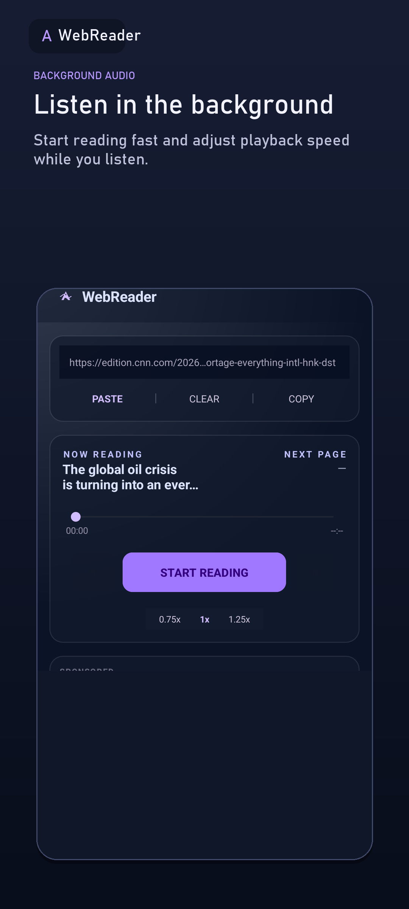

Share a link
Send an article from your browser or paste its URL into WebReader.
LISTEN TO THE WEB YOUR WAY
Share a link with WebReader. It extracts the main article text and reads it aloud, so you can listen while commuting, doing something else, or with your screen locked.
Get it free on Google Play
FROM LINK TO AUDIO
Send an article from your browser or paste its URL into WebReader.
WebReader extracts the article content for a cleaner listening experience.
Switch apps and control playback from your notification.

START IN A FEW STEPS
Extraction varies by website. Pages that require sign-in or block access may not work completely.
Read the Android guide to listening to web pages →
MAKE LISTENING YOURS
READ ON YOUR SCHEDULE
WebReader is a web page reader for Android: share an article, blog, or story and listen with text to speech using voices on your device. For commutes, chores, or a screen break. Extraction varies by website.
PICK THE RIGHT WAY TO LISTEN
Chrome on Android offers “Listen to this page” on supported pages. If you only need to hear one page in your browser, try that first. WebReader is useful when you want to share links from other apps, keep a listening history, and return to a page you opened; article extraction varies by website.
COMMON QUESTIONS
You can download the app for free. It contains ads and offers in-app purchases; Google Play shows prices and details before a purchase.
An internet connection is needed to load web pages. Spoken audio may require a connection or work offline depending on the voice and text-to-speech engine on your device.
Not always. Pages that require sign-in, block access, or load content in unusual ways may not extract completely.
Yes. The interface is available in English and Vietnamese. Spoken voices depend on the text-to-speech voices installed and supported on your Android device.
Reading history and progress are stored on your device. Google Ads and Firebase may process some device, app activity, and diagnostic data. See the Privacy Policy for details.
WEBREADER FOR ANDROID